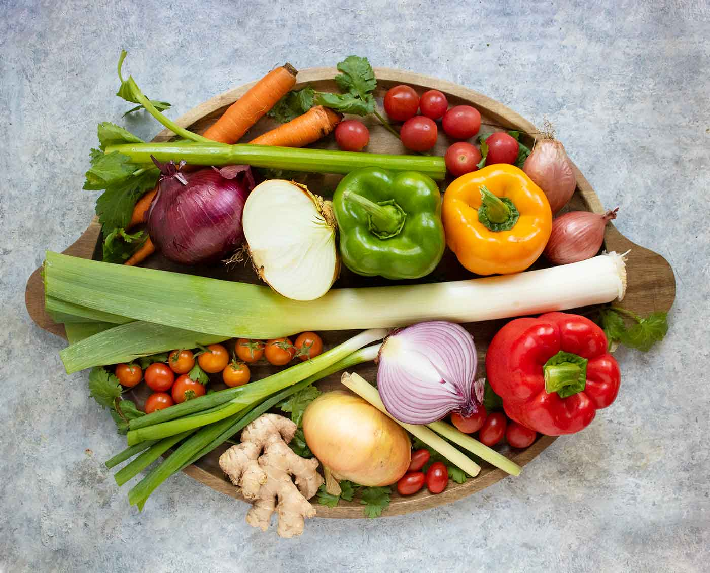

HOME
Quick Spicy Pickles Recipe
Introduce these delicious spicy pickle chips in your life!
Through many trials and tribulations, I crafted these deliciously spicy pickles to add some zest to my life.
These are quick and easy to make in a pinch, with very few ingredients. This recipe will make 24oz of pickle juice. Let's dive in!

Ingredients
- 1/2 tbsp Mixed Pickling seasoning
- 1 tbsp salt
- 1/8 tsp of pepper
- 1 tbsp sugar
- 3/4 cup distilled white vinegar
- 1 1/2 cups of water
- 3 kirby cucumbers, sliced
Aromatics for the Jar
- 2 cloves of garlic, crushed
- A few sprigs of dill
- 1/4 chopped onion
- 1 tbsp crushed red pepper flakes
Steps
- Prepare your jar by adding your sliced cucumbers and the aromatics. Evenly spread your aromatics if you can. Set aside.
- In a pot, combine the vinegar and water together.
- Add the mixed pickling seasoning, salt, pepper, and sugar. Bring to boil, stirring occasionally.
- Once it has reached a rolling boil for 1 minute, remove from heat.
- Pour the juice immediately into your prepared jar of cucumbers and seal it with a lid
- Allow it to cool completely, then refrigerate for 2 hours before enjoying